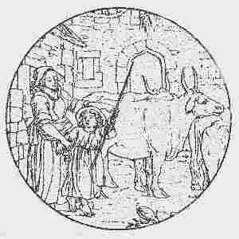

An Hollaika

Ton
|
1. Disul vintin a-ba zaviz mond da gas va zaout er-maez,
Me gleve va dous o kana hag he anaiz diouzh he mouez, Me gleve va dous o kana, kana ge war ar menez; Ha me ya da zevel ur zon da gana ganti ivez. 2. - Ar c'henta gwech em-eus gwelet Marc'hadig koant, va mestrez, Oa oc'h ober he fask kentañ e-barzh iliz ar barrez, E-kreiz tre-barzh iliz Fouenant e-touez ar vugale: D'ar pred-se e oa daouzeg vloaz, ha me daouzeg vloaz ivez. 3. Evel ur bleuñv melen balan, pe 'vel ar rozennig-gouez, 'Vel ar rozenn gouez 'touez al lann, oa etrezo va mestrez: Tra oan bet gant an oferenn 'med selled outi na reen; Seul vuioc'h-vui outi 'zellen, seul vuioc'h-vui 'blije din. |
4. Me m'eus ur we'en e liorzh va mamm a zo karget a avaloù,
Hag un dachennig c'hlaz dindan hag eur vodenn tro-war-dro: Pa 'zeuio va dousig koantig, va muia-karet d'am zi, Ni a yelo da zisheolia, va dous ha me dindani. 5. Un aval ruz a dapin hag ur boked rin 'viti, Hag ur rozinil a garan e lakin ivez enni, Ur rozinilig gwall-c'hweñvet, abalamour d'am enkrez, Rag n'em-euz ket c'hoazh ganti ur bouch a wir garantez.- 6. - Tavit gant ho son, va mignon, tavit prim gant ho komzoù; An dud o vont d'an oferenn zo en traoñ hor selaou. Ur wech-all pa zeufem d'al lann ha vem hon-unan hon-daou, Ur bouchig a wir garantez a roin deoc'h,... unan pe zaou.- |
|
Dornskrid Keransker N°1 (p. 20)
(1) Disul vintin ha pa zavan 'hont da kas va zaout er-maes, Me gle'e va mestrez o kanañ hag he anaas deus he mouezh. ... Me zo sur d'he barlant, mar gellan kavoud an tu, Ma ve va mestrez amañ pehini garan barfet: Mar ve daou tri devezh amañ n'em-be na naon na sec'hed. ... (2) Ar c'hentañ m'eus bet 'n enour danvezout va mestrez Oa barzh an iliz parrez pa oa gan an oferenn-bred. Evel ur bouked lavand, pe ve ar foz ha lis. Me ... hi permetet mond e-kreizh an iliz. A-benn ur mac'hiad goude 'voa echuet an oferenn Me a welaz va mestrez o diskenn an diri gwenn. |
Skrivet a-istribilh
Kalz demeus ar verc'hed yaouank e oa ganti 'n ur bandenn: - Debonjour d'eoc'h-hu, mestrez, debonjour, a laran d'eoc'h. (6.4) Ur bouchig ar gwir garantez a c'houlennan diganeoc'h. (6.4) - N'am eus ket refuzet biskoazh ... ur bouch na daou Mez Doue a permeto 'vefem-ni pried hon-daou . Deuit-c'hwi ganin, va mestrez , deuit ganin d'am jardin Da gweloud ar rozennig kaer em'eus gwelet diryaou vintin. Da gou'oud hag a zo gweñvet pe chouket e-maez ar bod. Ha ... pa hi gweliz hi oa liv gant ho div chod Setu aze va mestrezig ... az klask Setu gweñvet ar rozennig hag hi chomet er flas. |
Dornskrid Keransker N°1 (p. 44)
...(3.3) Tre oan gant an oferenn-bred Me ne ren ket nemet selled. (3.4) Seul vuioc'h-vui outi sellen Seul gwelloc'h-vui a blije din. ...(4.1) Me'm-eus ur we(z)enn 'jardin va zad ... Hag e-kreiz zo un avalenn. (4.3) Ha zeuy va dousik ha me, Da zizheoliñ dindani... (Cf. Son Amour ) |
Kempennet gant Christian Souchon